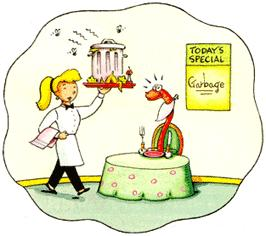

Finding treasure among
the wreckage.
I bring all of this up because I finally harvested my worm bin. Talk about a dichotomy of hope and despair. It all started last summer when I took home my blue plastic box with its white smiley cartoon worm saying "Feed me garbage" painted on the side. I envisioned myself soon scooping out copious mounds of dark rich worm castings, just like the stuff garden stores sell for $13.99 a bag. Tie some up with a colorful ribbon and - presto - no more holiday gift worries.
I did my best, initially, to follow the vermiculture creed, feeding my red wigglers measured portions of their favorite kitchen scraps and layering in just the right amount of carefully torn soy-ink newspaper strips for bedding. I dutifully mist-moistened the paper with filtered water and shielded the worm bin from harsh sunlight. This mandated wormfeeding regimen was tougher than Weight Watchers.
Predictably, after weeks of strictly restrained input and meticulous record keeping, my discipline gave way. I fed more than the prescribed amount of wilted greens. I gave my worms a whole spoiled cantaloupe. Instead of walking my sinkside scrap tub out to the compost heap, I dumped it all into the vermiculture bin, wantonly disregarding the instructions to sort out citrus rinds, avocado pits and onions. I essentially put the worms on a binge diet.
Apparently vermiculture is a more exacting science.
Months past schedule, on a damp, gray day, I carried the bin outside to collect my hard-won worm castings. Eager to run my fingers through the promised loot, I spread out newspaper and overturned the contents. My heart sank. Dashed were my visions of abundant sweet dark castings. Clearly, there would be no gift bags of "gardener's gold" for the holidays. To my dis may, out poured a slimy mass of rotting food and pale wads of decomposing worms. In that instant, I believe I discovered what is meant by the stench of death.
When the air cleared, I pulled up my portable gardening bench and took a closer look. Gently spreading the goop with my trowel, I started searching for survivors. Like a rescuer patrolling the icy waters where the Titanic sank, I watched carefully for any movement and began lifting near-lifeless bodies from the wreckage. Here a wiggle, there a squirm. As each little clinger to worm life made itself noticed, I hoisted it up to safety. I tenderly placed the barely living on a soft dry bed of shredded newspaper. I muttered my solemn promise to all wormkind that from that day forward I would faithfully obey the hallowed rules of vermiculture.
I must have looked absolutely pitiful sitting there in the cold, tearfully salvaging worm life, because my noble mate gave up the coziness of our sofa to come outside and console me with sweetness. There it was - my reason to treasure even that difficult day.
|
 |
|
|